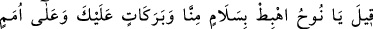
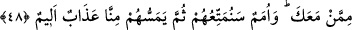

göre olan Hakîm’sin; sen hakîmlerin hakîmisin, hiçbir fiilin adâletsiz ve hikmetsiz
değildir. Bunu en iyi bilen de sensin.
Rab Teâlâ ruha “buyurdu ki: “Ey Nuh! O asla senin ailenden” yani din ve millet
mânâsındaki âilenden “değildir.” Aileden olmak, iki türlüdür: akrabalık sebebiyle
âileden olmak, din ve millet ehilliği. Burada, “âilenden değildir” sözüyle akrabalıktan
gelen âile bulunmadığı söylenmiş oluyor. Çünkü nefis ruhtan doğmuştur.
Allah Teâlâ daha sonra dinden gelen âilenin niçin bulunmadığını şöyle açıklıyor:
“Çünkü onun yaptığı kötü bir iştir.” Yani daima kötülüğü emretmek için yaratılmıştır.
Bu, onun ebedî yaşam tarzıdır.
Sonra Allah Teâlâ, ruhu yakınlık ehlinin âdâbı ile terbiye etmek maksadıyla şöyle
buyuruyor: “O halde hakkında bilgin olmayan” Yani bu yakınlık (kurbet) yaygısı
üzerinde böyle bir serbestliğin caiz olup olmadığına dair gerçek bir bilgin olmayan “bir
şeyi benden isteme!” Ey kutsal Ruh, sana bu yaygı üzerinde böyle bir serbestlik içinde
bulunmak sûretiyle “Ben sana câhillerden” câhil ve zâlim nefislerden “olmamanı
tavsiye ederim.” Burada ulvî âlem olan ruhun nefse ve nefsin heveslerine uyduğun
takdirde süflî tabiatlı, âdî işlerle uğraşan, câhil birisi haline geleceğine işaret vardır.
(Nûh) dedi ki: “Rabb’im, hakkında bilgim olmayan bir şeyi senden istemekten sana
sığınırım. Eğer beni bağışlamaz ve bana acımazsan ziyana uğrayanlardan olurum.”
Ruh “dedi ki: “Rabb’im, hakkında bilgim olmayan bir şeyi” yani imtihana
çekilmekte olan nefsin dünyanın âfet ve şehvetleri yüzünden düşeceği fitne tufanından
kurtarılmasını “senden istemekten sana sığınırım. Eğer beni bağışlamaz” mağfiret
nurlarıyla desteklemezsen “ve” senin yol göstermen olmadan yolumu bulmaktan âciz
olduğum için “bana acımazsan ziyana uğrayanlardan olurum.” Bu ifade ruhu ziyan
etmekten kurtaranın Allah’ın rahmeti olduğuna işaret etmektedir. et-Te’vîlâtü’n-
Necmiyye’de böyle geçmektedir.
48. Denildi ki: “Ey Nuh! Sana ve seninle beraber olan ümmetlere bizden selam ve
bereketlerle (gemiden) in. Kendilerini (dünyada) faydalandıracağımız, sonra da
bizden kendilerine elem verici bir azabın dokunacağı ümmetler de olacaktır.”
“Denildi ki: “Ey Nuh!” diyen Allah Teâlâ’dır. “Sana ve seninle beraber olan”
beraberindekilerden dallanıp budaklanacak “ümmetlere bizden selam ve bereketlerle”
neslin için dâima artan hayırlarla, gerek senin gerekse neslinin geçimini sağlayacak
türlü rızıklarla “in.” yâni gemiden geminin üzerinde bir ay durup beklediği Cûdî’ye
veya Cûdî’den düz araziye in.
Selam ya kötülüklerden kurtuluş mânâsına olur. “Bizden” lafzı da bu selametin ne